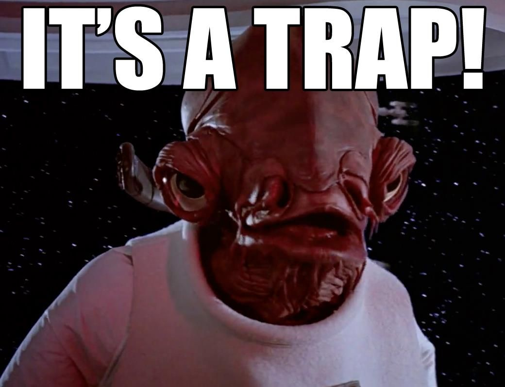

Statistical Methods in Physics
ASTR/PHYS 390/590
Spring, 2025
Day and Time: Thursday from 4:30 - 7:10 pm
Location: 220 Planetary Hall
Instructor: Bob Weigel
Email: rweigel@gmu.edu
Office Hour: Thursday 3:30-4:30 pm
Course URL: http://rweigel.github.io/stats
Credits: 3 (Lecture)
Prerequisites:
390: Grade of B or higher in PHYS 251 or permission of instructor;
590: Enrollment in a COS or VSE graduate program.
Catalog Description: Bayesian and frequentist statistical and data analysis methods applied to data and problems in physics.
4:30-7:10 pm
Project presenations ( 10-20 minutes; during final exam slot)
Guidelines:
Present exploratory data analysis results that are relevant to part 2.
Discuss question that you want to answer that requires statistical methods. Discuss related literature, if relevant.
Review theory
Present results related to question
You may use PPT or present from your README.md file.
Grading:
All revisions discussed during previous class presentations addressed
Theory correct
Results correct
Last class
Mid–term
No class – Spring Break
HW 4 comments
Try using more NumPy. Will be faster and usually easier to read.
Part 4. Gave full credit. This is not something I covered, but I want you to ponder the question before I discuss a method for assessing claims like this.
Common issues.
Review of Sampling Distributions and their Simulation (see notes below)
Code I’ll cover in class sampling_dists.py
Mid-term
Date (nominally March 20th)
Project discussion
Hypothesis Testing (see notes below)
On the homeworks, you have used sampling distributions many times. There are two types of sampling distributions: exact and simulated. There are many ways of simulating a sampling distribution.
When we take a sample from a population and compute a statistc, for example the sample mean, we want to know the uncertainty in the statistic. That is, we want to know the probability distribution of the means. That is, if we repeated the experiment many times, what would be the distribution of the sample means for all experiments. The probability distribution of the test statistic is the sampling distribution.
If the sampling distribution is known, we use it to compute error bars on a test statistic. Sampling distributions are also needed for hypothesis testing.
In HW 2.3, we derived a sampling distribution numerically. It was found that when values of were drawn from a Gaussian distribution with mean and standard deviation and the statistic
was computed times, 95% of the time the range
included . (We say that this range “traps” 95% of the time.) We actually did not need to do the numerical experiment when is large. We know the expected result from the Central Limit Theorem.

The sampling distribution of a test statistic depends on the equation for the test statistic and the population distribution. There are a limited number of test statistic/population distributions for which we know the exact sampling distribution of the test statistic. Simulation can be used in other cases.
Values are drawn from a population with known pdf and pdf parameters and a sample statistic is computed. This process is repeated many times to create a pdf of the sample statistic.
Example: Draw values from and compute . Repeat and plot the pdf or histogram of the values.
This method does not always have practical value – if you know the distribution and its parameters, you can simply use the analytical equation for the pdf. (However, one can come invent a case where the population is based on known pdfs but the composite pdf is unknown; for example if the probability of a value in a population is given by a complex product of known pdfs)
I generally have students use a parametric simulation to reinforce the idea of the meaning of the sampling distribution of a test statistic – that it is a hypothetical distribution that would result if you could do many repeated experiments.
The definition of the idiom “bootstrapping” is “get (oneself or something) into or out of a situation using existing resources.”
Values are drawn from a population with known pdf and unknown pdf parameters, and a sample statistic is computed. The parameters of the population pdf are estimated using the sample. The process is to draw values from a population and compute a sample statistic. Resample the values with replacement and compute sample statistic again. Repeat the resampling step times.
For small , “clustering” can occur because a given value can appear more than once in a bootstrap sample. One way to address this is to add a small random value to each value in the bootstrap sample.
Example: Draw values from and compute and . Next, draw values from and compute and repeat this process times.
Values are drawn from a population with unknown pdf (both functional form and its parameters) and a sample statistic is computed.
Example: Draw values from and compute and . Next, create a new sample of size by resampling the values with replacement and compute ; repeat the resampling process times.
This procedure was used in HW 4.2.
Point Estimation
Expectation Values
Probability Distributions
In-class problems
2% of people age 50–60 who participate in routine screening have colon cancer. 80% of people with colon cancer will test positive. 9.6% of those without colon cancer will also test positive. A person in this age group had a positive test in a routine screening. What is the probability that they actually have colon cancer?
A box in a certain supply room contains four 40-W light-bulbs, five 60-W bulbs, and six 75-W bulbs. Suppose that three bulbs are randomly selected.
a. What is the probability that exactly two of the selected bulbs are rated at 75-W?
b. What is the probability that all three of the selected bulbs have the same rating?
c. What is the probability that one bulb of each type is selected?
d. Suppose now that bulbs are to be selected one by one until a 75-W bulb is found. What is the probability that it is necessary to examine at least 6 bulbs?
e. How would you use a numerical simulation to estimate the answer to a. (assume you don’t know the formulas for permutations and combinations)?
Devise a numerical experiment to test the statement of the Weak Law of Large Numbers
Devise a numerical experiment to test the statement of the Central Limit Theorem
Introductions
Discuss Syllabus Questions. Preparation: Read the syllabus before class.
Cover Probability topics in Devore Chapter 2; see also Bulmer Chapters 1 and 2, Bonamente Chapter 1, Rozanov Chapters 1 and 2, Larson Chapters 1 and 2 and DeGroot Chapter 1.
Preparation: Read Devore Chapter 2, write down all of the definitions of key terms, and be prepared to define without referring to your notes. You don’t have to fully understand all of the examples; I will go over examples and problems in class, and it will help if you are familiar with all of the definitions.
At the start of class, I will ask students for key terms, write them on the board, and then ask for volunteers to provide a definition (ideally without referring to your notes).
Cover GitHub; Preparation: Create a GitHub account before class starts.
Cover Discord
This course covers fundamental statistical methods that apply to most data–related (both measurement and simulation) problems. I emphasize the development of a deep understanding of the interpretation of statistical results.
I encourage students doing data-related research projects to use their data for a project in which the statistical methods covered in class are applied to their data.
Motivation
Many entry-level jobs for BS, MS, and PhD typically involve exploratory data analysis and require a basic understanding of statistics.
Many of our graduate students are working on data-intensive research problems that require understanding modern statistical methods.
Many BS, MS, and PhD students have not taken a traditional statistics course as an undergraduate.
Learning Outcomes
Students will
be able to solve fundamental statistical problems analytically and numerically;
have an intuitive understanding of the interpretation of uncertainty;
be able to compute uncertainties using at least two methods;
generate ideas for exploratory data analysis and validation of statistical calculations;
learn to use at least one advanced statistical package;
learn to present data and results at the level of quality seen in seminars, journal articles, and meeting posters; and
learn to write code in a way that is easy for others to understand and modify.
In-class time will be approximately 50% lecture/demonstration and 50% in-class discussion.
I usually have you do a reading and solve a basic problem on a new topic before I discuss it in class. I find content that I present “sticks” if students have experimented with the concepts before I discuss them.
You will be asked to participate in class discussions during class and on Discord. Talking and writing about statistics will help you understand statistics.
Homework assignments will be approximately 50% hand-written and 50% programs. I will ask students to present their solutions during class and for others to comment.
After the midterm, students will propose a project, and part of each subsequent homework assignment will be an additional analysis related to your project. The required analysis will be based on what you propose and ideas that are generated when you give a brief (5–minute) update on your progress.
You may use any programming language for homework and the final project. I will write my solutions in Python.
I assume that you are proficient in Python (or another language) at the level of a B grade in PHYS 251. The topics that you should be familiar with are covered in my notes for PHYS 251.
I have provided an extensive set of notes on Python techniques that you will use and should be familiar with.
There is not a single textbook that covers all of the material in this course. I will provide hand–outs or links to references for each topic covered.
Two general references on statistics that I highly recommend are
Principles of Statistics, M.G. Bulmer – A short Dover book that covers fundamental statistical topics; also available used on Amazon for $5.00.
Probability and Statistics for Engineering and the Sciences (8th ed), J.L. Devore – A commonly used textbook for upper-division engineering and science majors. | Amazon
Many additional references and resources are listed in the References section of this syllabus.
Homework: 40% - Approximately one per week; extra problems will be assigned for students registered in 590. Most homework assignments will include at least one problem that requires the use of real data. Assignments are due before class starts.
Midterm: 30%
Final project: 30%
Final course: Grades for undergraduates are determined from numerical course grades using 90%–100% A, 80%–90% B, 70%–80% C, 60%–70% D, < 60% F. For graduate students, 70% and lower is an F (the graduate grade scale does not have a D).
Supplementary references and notes will be provided as needed.
Mathematical, Frequentist, and Bayesian probabilities
Conditional probability
Bayes’ theorem
Counting - permutations and combinations
Probability distributions
Overview of statistical fallacies
NumPy
Random number generators
Data visualization and creating publication–quality plots
Histograms
Autocorrelation
Periodograms and Short–Time Fourier Transforms
Other options based on student interest
Expectation, mean, variance, and bias
Random variables, distributions, quantiles, mean, variance
Joint distributions, covariance, correlation, independence
The law of large numbers
Central limit theorem
Bootstrapping
Frequentist
Bayesian
Bootstrap and Jackknife
Least-squares
Maximum likelihood
Linear models
Nonlinear models
The EMCEE Markov chain Monte Carlo Python library
The following references are not needed for this course, but you may find them useful for alternative explanations of topics in the textbook.
Principles of Statistics, M.G. Bulmer – A short Dover book that covers fundamental statistical topics.
Many of the topics covered in this course are covered in the MIT OCW course Introduction to Probability and Statistics.
Dealing with Uncertainty - A Guide to Error Analysis 2nd Edition, M. Drosg – Covers uncertainty and error analysis basics at Freshman physics lab level. Very good but very expensive (> $100 on Amazon).
Bonamente, 2017 Statistics and Analysis of Scientific Data - Listed as a graduate text, but level is similar to undergraduate textbooks. Covers most of the main topics discussed in this course.
Statistical Methods in Experimental Physics, F. James
Statistics, D. Freedman, R. Pisani, and R. Purves – A basic introduction to statistics with many examples and extended discussion of topics.
Probability for the Enthusiastic Beginner, D. Morin – An elementary introduction to probability.
Probability and Statistics for Engineering and the Sciences (8th ed), J.L. Devore – A commonly used textbook for upper-division engineering and science majors. | Amazon
Probability and Statistics, M.H. DeGroot and M.J. Schervish (4th ed) – Similar in scope and coverage of Devore.
Doing Bayesian Data Analysis by Kruschke – The best overview that I am aware of. The examples are in R, but translation to other languages is straightforward. Most of this book’s value is in the concepts’ descriptions.
Bayesian Statistics – an Introduction by P.M. Lee is a classic introductory textbook.
Neural Networks for Pattern Recognition (2006), by C.M. Bishop – Advanced undergraduates or first-year PhD students; the first few chapters have a good introduction to Bayes’ rule.
Teaching Statistics in the Physics Curriculum: Unifying and Clarifying Role of Subjective Probability (1999), by G. D’Agostini
The Elements of Statistical Learning (2009; 2nd Edition), by T. Hastie, R. Tibshirani, and J. Friedman – This is a classic book on Machine Learning/Statistical Learning.
Validation of Software for Bayesian Models Using Posterior Quantiles by Cook, Gelman, and Rubin, 2006 (https://www.jstor.org/stable/27594203).
Section 3.4 of the lecture notes on Hierarchal Models by Junker contains in Section 3.4 a detailed introduction to a typical example covered in many books – finding the posterior when the standard deviation of the population is known and a prior distribution is available.
The primary reference is Jaynes 1976.
Frequentism and Bayesianism: A Python-driven Primer (2015), by J. VanderPlas (arxiv.org/pdf/
Lecture notes on the comparison of frequentist and Bayesian Inference, by J. Orloff and J. Bloom (MIT18
Statistical Inference Showdown: The Frequentists vs. The Bayesians (2017), by K. Dubovikov.
The Earth is Round covers the mis-use of significance tests in the psychological literature.
In the following references, the terms “Bayesian Intervals”, “Bayesian Confidence Intervals”, and “Credible Intervals” are used to mean the same thing.
The primary reference is Jaynes 1976. This is not an easy read as a first introduction. The following references provide a more introductory explanation: Kruschke and Liddell 2018; VanderPlas 2014. A blog post by VanderPlas goes over one of the examples in Jaynes. Read the comments to see the disagreements about the Frequentist and Bayesian approaches.
Levy 2012 is also a good introduction.
Credible intervals are described by the authors of the easystats.
testscience.org has a brief example that compares confidence intervals with credible intervals.
Analysis of regression confidence intervals and Bayesian credible intervals for uncertainty quantification by Liu, Ye, and Ling, 2012 (https://doi.org/
bayes_mvs in SciPy uses the method described in A Bayesian perspective on estimating mean, variance, and standard-deviation from data by Travis E. Oliphant, 2006
Data analysis recipes: Using Markov Chain Monte Carlo (2017), Hogg and Foreman-Mackey (available from arxiv.org and iopscience.iop.org); Provides an overview of the motivation for MCMC sampling, discussions of its use and abuse, and detailed recipes for implementation.
Markov Chain Monte Carlo Methods for Bayesian Data Analysis in Astronomy (2017), S. Sharma.
Bayesian Methods for the Physical Sciences: Learning from Examples in Astronomy and Physics (2015), S. Andreon and B. Weaver.
Bayesian Models for Astrophysical Data: Using R, JAGS, Python, and Stan, J.M. Hilbe, R.S. de Souza, and E.E.O. Ishida.
Modern Statistical Methods for Astronomy: With R Applications (2012), E.D. Feigelson and G.J. Babu.
Statistics, Data Mining, and Machine Learning in Astronomy: A Practical Python Guide for the Analysis of Survey Data, Željko Ivezic, Andrew J. Connolly, Jacob T VanderPlas, and Alexander Gray.
Computational Bayesian Statistics: An Introduction (2019), M. Antónia Amaral Turkman, Carlos Daniel Paulino, Peter Müller.
Think Stats - A free book demonstrating standard statistical calculations in Python.
Mason is an Honor Code university; please see the Office for Academic Integrity for a full description of the code and the honor committee process. The principle of academic integrity is taken very seriously and violations are treated gravely. What does academic integrity mean in this course? Essentially this: when you are responsible for a task, you will perform that task. When you rely on someone else’s work in an aspect of the performance of that task, you will give full credit in the proper, accepted form. Any student use of Generative-AI tools should follow the fundamental principles of the Honor Code.
Disability Services at George Mason University is committed to providing equitable access to learning opportunities for all students by upholding the laws that ensure equal treatment of people with disabilities. If you are seeking accommodations for this class, please first visit http://ds.gmu.edu/ for detailed information about the Disability Services registration process. Then please discuss your approved accommodations with me. Disability Services is located in Student Union Building I (SUB I), Suite 2500. Email:ods@gmu.edu | Phone: (703) 993-2474.
We seek to create a learning environment that fosters respect for people across identities. We welcome and value individuals and their differences, including gender expression and identity, race, economic status, sex, sexuality, ethnicity, national origin, first language, religion, age, and ability. We encourage all members of the learning environment to engage with the material personally but to also be open to exploring and learning from experiences different than their own. Mason’s nondiscrimination policy is at https://universitypolicy.gmu.edu/policies/non-discrimination-policy/.
If you have a question whose answer may be of interest to other students, please post it to Discord and make it visible to other students. You can set the post so that you are anonymous.
If you need to send communicate with me about something private, please send it to rweigel@gmu.edu from your MasonLive email address.
Learning Services https://learningservices.gmu.edu/
Student Support and Advocacy Center https://ssac.gmu.edu/
Counseling and Psychological Services https://caps.gmu.edu/